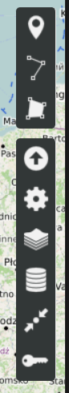
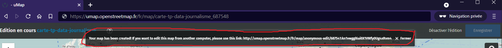
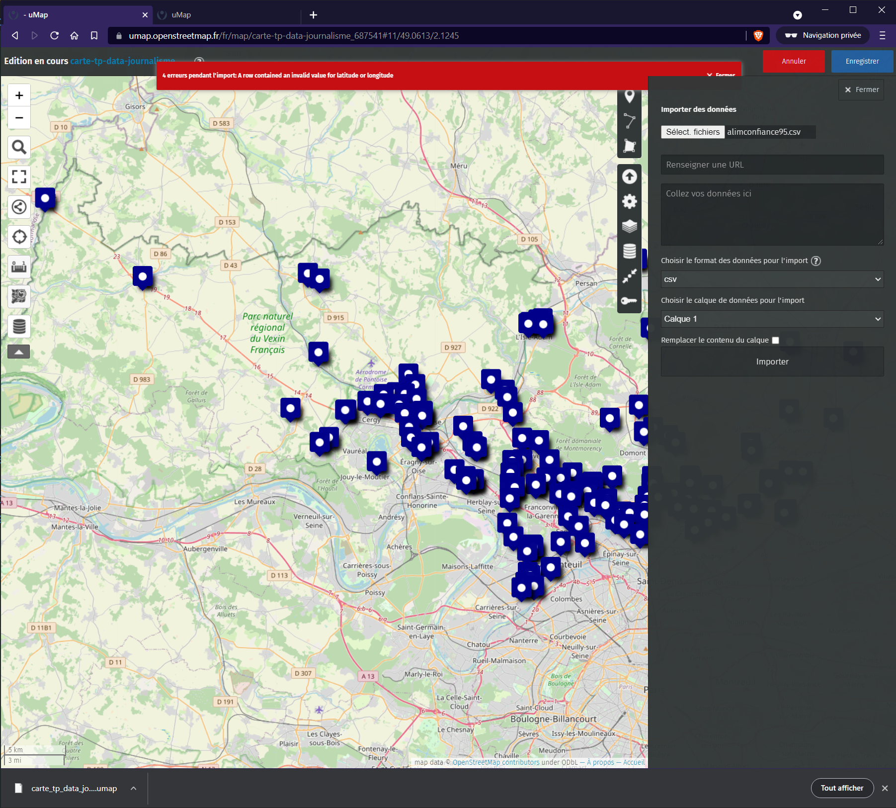
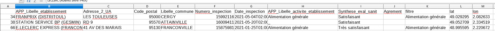
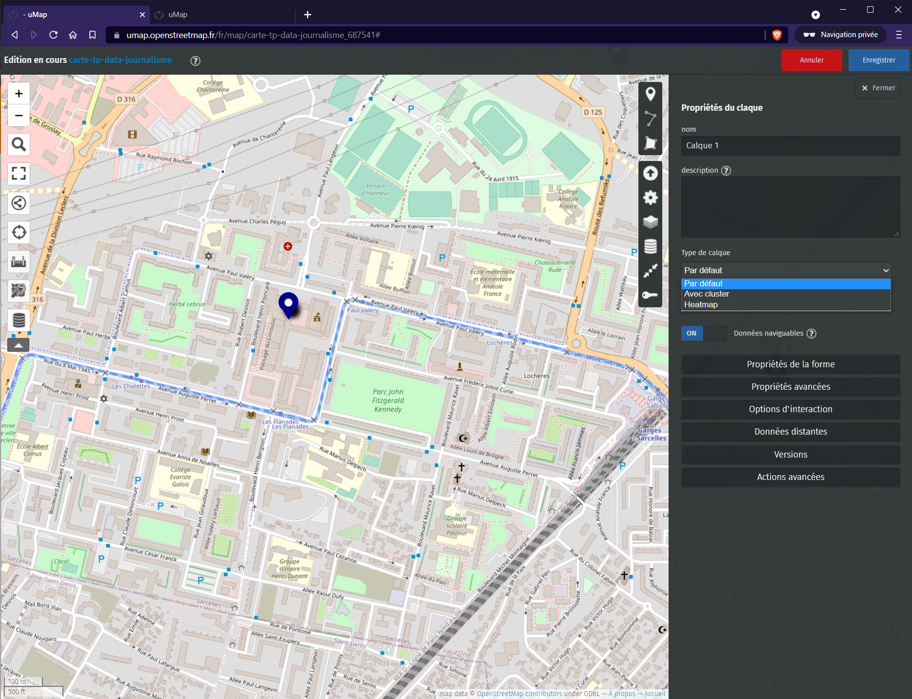

Vous devriez tomber sur une interface comme celle-ci
Voilà, vous êtes face à l'interface de création de cartes, les plans ici, ce n'est pas GoogleMaps mais
openstreetmap (osm), ces plans ont été faits par la communauté, si vous le souhaitez vous pouvez y contribuer.
C'est l'équivalent gratuit et sans tracker de Google Maps. L'interface (d'édition) est composée de deux menus
latéraux, pour l'édition seul celui de droite nous
intéresse. (de haut en bas)

Ajouter un marqueur
Designer une ligne
Designer un polygone
Importer des données
C'est ce qui va nous intéresser dans cet exercice
Editer les paramètres
Changer le fond de carte
Gérer gérer les calques
Enregistrer le zoom et le centre actuel
Changer les permissions et éditeurs (nécessite d'être connecté)
Donnez un nom à la carte (celui que vous voulez) et enregistrez-la.
Remarquez que l'enregistrement a fait changer l'url du navigateur et a affiché une URL dans une popup
pensez bien à la garder de côté pour pouvoir éditer votre carte plus tard
Si vous perdez cette URL, il vous faudra exporter la carte puis la réimporter. Pour exporter la carte, il
faudra cliquer sur l'icône (menu de gauche),
exporter la carte
depuis le panneau apparu à droite. Et le fichier au format .umap devra être importé. Pensez à réenregistrer
la carte pour avoir une nouvelle URL secrète.

Essayez un peu d'expérimenter les trois premières options du menu de droite pour mieux vous familliariser.
Consignes de la pratique (cliquer pour afficher / cacher) - Partie 2
Sélectionnez l'option "Importer des données" et importez un des fichiers commençant par "alimconfiance" contenu dans la
ressource. Ce fichier
contient les résultats des contrôles officiels réalisés en matière de sécurité sanitaire des aliments
depuis
le 1er mars 2017 dans un département (le document original contient plus de données, mais on a filtré le
document avec pandas et fait quelques modifications au niveau des colonnes).
Si tout s'est bien passé, vous devriez voir des points apparaître sur votre carte (comme l'image
ci-dessous), ils représentent les entrées du jeu de données. Le bandeau d'erreur n'est pas très important,
c'est juste que le fichier a mal été nettoyé.

Notez un point sur cette fonctionnalité d'import de fichiers csv. Il faut impérativement qu'il contienne
les colonnes "lon" et "lat" pour qu'il puisse savoir où placer vos points.
Génial. Nous avons nos points. Enregistrez la carte puis cliquez sur "Désactiver l'édition". Si on clique
sur les points, ça n'affiche pas le nom du lieu. Changeons ceci.
Cliquez sur "Gérer gérer les calques". Ceci devrait afficher le panneau latéral et n'afficher qu'un seul
calque. Cliquez sur l'icône éditeur (voir image ci-dessous)
Cliquez sur "Option d'interaction". Dans "Gabarit du contenu de la popup", il vous est donné la
possibilité de définir ce qui doit être affiché dans la popup, le tout fonctionne via un système de
templating, vous pourrez trouver plus de détails en cliquant sur le point t'interrogation à côté de
"Gabarit du contenu de la popup".
Si on regarde le contenu, uMap affiche la valeur des colonnes "name" et "description" pour chaque point
or si on regarde notre fichier (voir image ci-dessous), on remarque que ces clés n'existent pas.

Modifiez le contenu de l'option "Gabarit du contenu de la popup" de façon à afficher le nom de
l'établissement. Pensez à enregistrer puis désactiver l'édition pour valider vos modifications.
Expérimentez. Essayez d'afficher d'autres choses. Pensez à enregistrer puis désactiver l'édition pour
valider vos modifications.
Nous savons désormais comment éditer le contenu de nos popups, nous en avons assez pour mettre des cartes
interactives dans nos articles de presse. Nous allons voir comment faire des clusters (groupement) de points
pour améliorer la lisibilité.
Retournez sur sur "Gérer gérer les calques". Ceci devrait afficher le panneau latéral et n'afficher qu'un
seul calque. Cliquez sur l'icône éditeur (voir plus haut). Cliquez sur la liste déroulante "Type de
calque" et sélectionnez "Avec cluster" (voir image ci-dessous)

L'activation de cette option reste facultative, normalement l'outil est censé pouvoir décider par défaut
dépendamment du nombre de points
Nous savons importer des fichiers, nous avons éditer le contenu des popups, faire des clusters. Il nous
manque plus qu'à afficher notre carte ailleurs. Alors oui, nous pouvons partager le lien actuel, mais nous
pouvons aussi afficher notre carte dans une page web.
Cliquez sur le bouton de partage dans le menu de gauche . Ceci va afficher un panneau à droite, copiez le contenu de la zone de texte et collez-le dans ce
ficher dans la balise <main>. Sauvegardez le fichier et actualisez la page, vous devriez voir votre
carte.
Note : La carte ne s'affichera pas si cette page web ne tourne pas sur un serveur (php/nodejs...)


 (menu de gauche),
exporter la carte
depuis le panneau apparu à droite. Et le fichier au format .umap devra être importé. Pensez à réenregistrer
la carte pour avoir une nouvelle URL secrète.
(menu de gauche),
exporter la carte
depuis le panneau apparu à droite. Et le fichier au format .umap devra être importé. Pensez à réenregistrer
la carte pour avoir une nouvelle URL secrète.